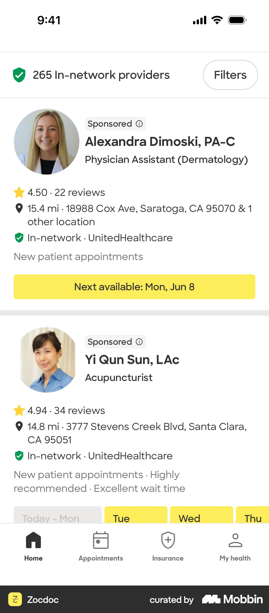
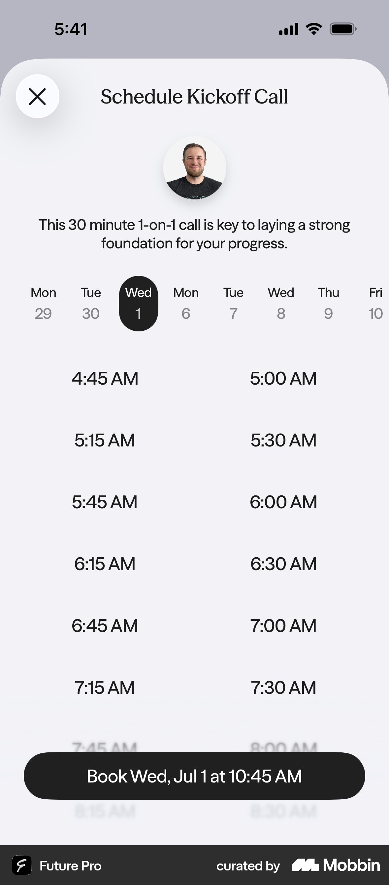
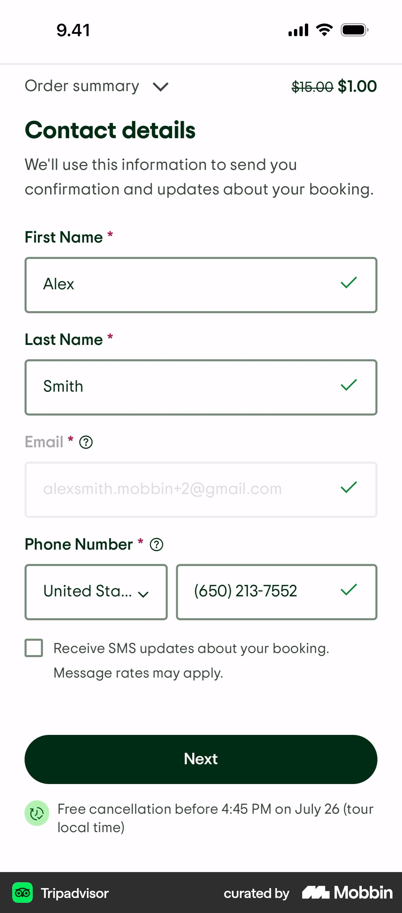
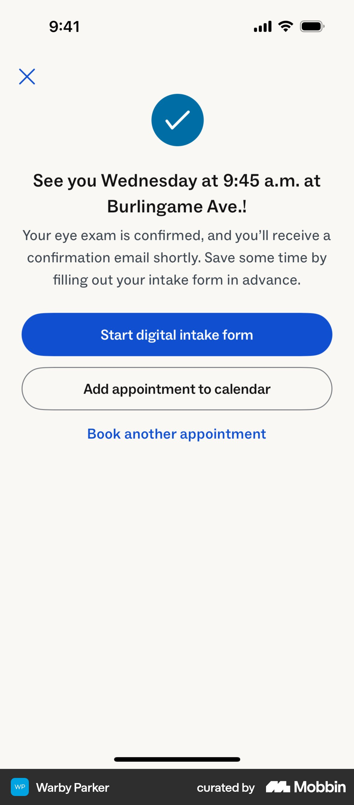
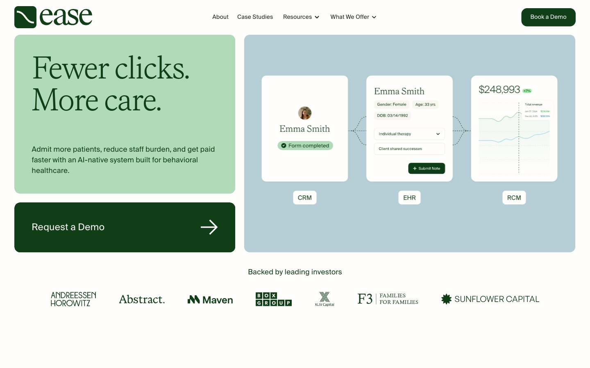
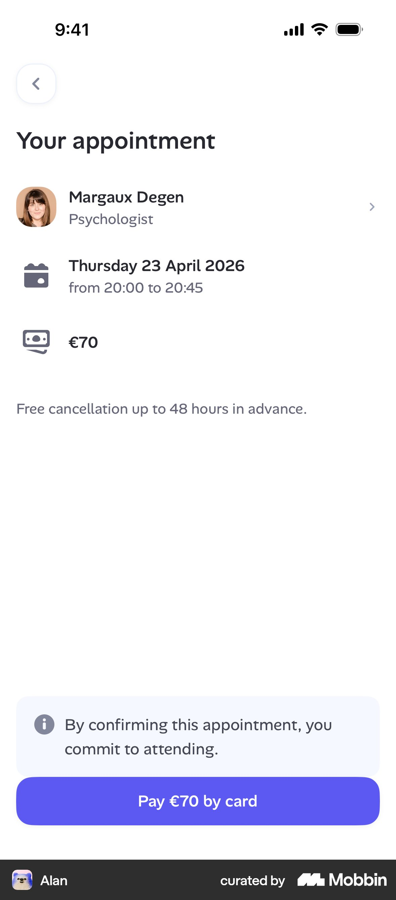
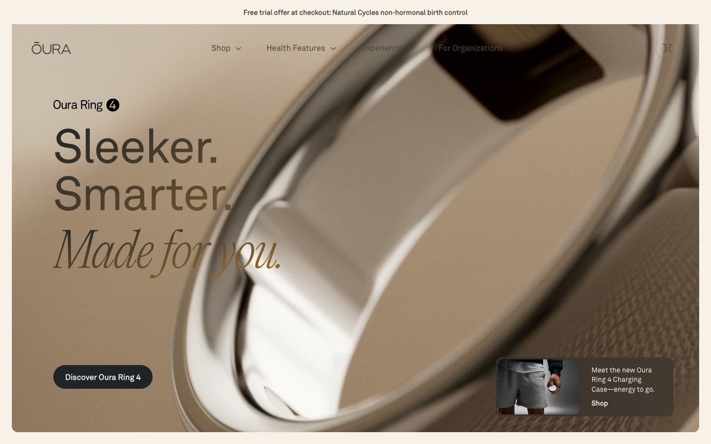

Velora quiz research
10 research agents, 41 screenshots from Mobbin and Refero, plus web evidence. Start with what's new — ideas that weren't on our list. Tap any screenshot to enlarge.
New ideas
not on our listEach one with a real example.

Play their answers back on the result
Hers repeats the person's own answers as a sentence. Feels like being understood, not judged — and lets them fix a wrong answer.
Details →
Say “may suit you — the doctor decides”
Ro: calm verdict + who decides + one button. Honest screening: the doctor decides, not the quiz.
Details →
Show the journey, not a weight promise
A step timeline (meeting → doctor → start → follow-up) instead of a personal kilo forecast.
Details →
Short “reviewing your answers” pause
2–3 s, three real checks. Makes the result feel earned. Only on the good-news path — before bad news it backfires (Buell & Norton).
Details →
Clinician face + terms at the button
Photo, licence, “20 min · video · 0 kr · cancel anytime” right above the CTA removes the last three objections.
Details →
“Next available” as one tap
Zocdoc leads with the soonest slot. Sooner meetings also mean fewer no-shows (4.3% vs 7.7%, 1.26M appointments).
Details →
Sticky button that names the slot
“Boka tor kl 10:30” — host photo, purpose line, day strip and slots on one screen.
Details →
Never a dead-end day
Full day? Jump straight to the next free date instead of an empty screen.
Details →
Contact details only after the slot
Name, mobile, email — nothing else — with one line on why. Gating the result behind email loses 30–50% (vendor data).
Details →
Confirmation's job: get them to show up
Human headline (“Vi ses torsdag!”), add-to-calendar first, SMS reminders. Reminders cut no-shows 21% → 15% (meta-analysis).
Details →
“An estimate is fine” on weight
Removes the fear of having to step on a scale before answering — a real drop-off point.
Details →
Safety + time cost before question 1
One quiet card: “2 min · free · read by licensed staff” plus a soft exclusion note.
Details →
Conditions only when BMI is 27–29.9
Matches the drug label rule (FASS). Everyone else skips the screen. ≤6 options + “Inget av detta”.
Details →
One empathy moment mid-quiz
A single “thanks, here's what that means” screen after BMI. More than one becomes padding.
Details →
Calm premium visual direction
Ease Health: serif headlines, forest green + sage on cream, tinted panels, no shadows. Oura's warm linen as backup.
Details →Stigma-free language
“vikt”, “BMI”, never “fet/fetma”. ~75% of Swedes with obesity report bad treatment in healthcare — tone is a differentiator.
Nordic model, not US
Yazen/Kry/Doktor24: short quiz → a person. Noom/Ro/Hims: 55-screen intake → payment. Velora = Nordic: short, ends in a booked time.
Easy, no-wrong-answer first question
Foot-in-the-door: a small first yes raised agreement to a later big ask 76% vs 17%.
Say who it isn't for
Top UK/Nordic players list exclusions openly — builds trust and screens correctly.
Our ideas, checked
from our listWhat the research says about the ideas we started with.

Fewer steps, merged screens
Backed: fewer, simpler mobile pages lower quit rates. Ro and Hers both put height + weight on one screen.
% bar, front-loaded
Backed: fast-early bar 11.3% quit vs 21.8% slow-early (Conrad). Upgrade: call it effort-weighted and put heavy screens early.

Help button
Upgrade: Oura's “Why we ask” bottom sheet + a one-line reason under each sensitive field.
Better graphs
Upgrade: journey timeline instead of a weight curve — promises nothing.
Questions
14 examplesHow the best health quizzes ask sensitive things
Height and weight on one screen, framed as a "starting point"
For Velora: Put height and weight on one screen as cm + kg numeric inputs (inputmode="numeric"). Add sex and age only if they fit without scrolling. Use a heading like "Var börjar du?" ("Where are you starting from?"). Keep the reassurance line from notes.md ("Only your clinician sees this") under the weight field.
Details →"It's okay to guess" microcopy on weight
For Velora: Use this exact sentiment: "En uppskattning räcker, vi går igenom det tillsammans på mötet." ("An estimate is fine, we'll go through it together at the meeting.") Medically, a rough figure is fine for pre-screening because the clinician confirms it at the meeting. Autofocus the field. Use kg only (Sweden), with no unit toggle.
Details →"Why we ask" link that opens a bottom sheet
For Velora: This is the help-button pattern from notes.md. Add a "Varför frågar vi?" ("Why do we ask?") chip on the weight, conditions and medication screens. The sheet copy should cover (a) what the clinician uses the answer for, e.g. "GLP-1 is prescribed based on BMI and health", (b) who sees it, and (c) what happens if they're unsure. Store the copy in the question JSON config as a help field.
Details →Conditions list with a "why it matters" subline and a safe exit option
For Velora: Use a blame-free subline such as "Vissa tillstånd gör det svårare att gå ner i vikt, och påverkar vilken behandling som passar." ("Some conditions make it harder to lose weight, and affect which treatment fits.") Make "Inget av dessa" ("None of these") the exclusive last option, so it unchecks the others. For screening, keep the GLP-1 contraindications (e.g. MTC/MEN2 history, pregnancy, pancreatitis) as a separate screen so the answers can be checked properly. Don't offer "prefer not to answer" on that screen.
Details →Result screen that plays the user's answers back to them
For Velora: Open the result screen with one sentence that plays the answers back, e.g. "Utifrån ditt BMI på 32 och att du har provat flera gånger tidigare…" ("Based on your BMI of 32, and that you've tried several times before…"), followed by "medicinsk viktnedgång kan passa dig" ("medical weight loss may suit you"). Then the "Boka kostnadsfritt möte" ("Book a free meeting") CTA. Make each highlighted answer tappable to edit it, which also helps screening accuracy.
Details →
A "You've qualified" badge plus a single "What's next" step
For Velora: Use the badge wording "Du kan passa för behandling" ("You may be suitable for treatment"). Avoid "qualified" before a clinician has reviewed the case. Add one "Nästa steg" ("Next step") card: "Ett kostnadsfritt videomöte, 15 min, med legitimerad vårdpersonal" ("A free 15-min video meeting with licensed clinical staff"). Only show an outcome claim if it has a footnote to its source.
Details →
Height and weight on one calm screen
For Velora: Put height (cm) and weight (kg) on one screen with inputmode="numeric" and the unit inside the field. This conflicts with notes.md ("weight on its own screen"). One way to settle it: keep them together but put the reassurance line right under the weight field. Pick one and record why.
Details →
A "why we ask" line under the question
For Velora: Every sensitive question (weight, conditions, medication, pregnancy) gets a muted 1-line "why" under the title, for example "Vikt och längd ger ditt BMI, som avgör om behandling kan vara aktuell." Add "Vill inte svara" only where the clinic can still screen without the answer, never on BMI inputs.
Details →Safety disclaimer up front, then a warm "I'll ask a few questions"
For Velora: Use an intro screen or top card with one honest line on what the quiz does ("2 minuter · ingen kostnad · svaren läses av legitimerad vårdpersonal") and a soft note for exclusions (pregnant, under 18) instead of a hard-stop wall.
Details →
Inline "What does this mean?" link plus "I'd rather not say"
For Velora: For medical terms ("typ 2-diabetes", "sömnapné", "GLP-1"), add a "Vad betyder det?" link that opens a bottom sheet with 2-3 plain-Swedish sentences. Big serif question, large tap-target answers.
Details →
Empathetic feedback interstitial mid-quiz
For Velora: Add one interstitial after the BMI screen ("Tack. Utifrån dina svar kan medicinsk viktminskning vara ett alternativ — några frågor till om din hälsa.") using a real clinician photo. Use at most 1-2, or it becomes padding.
Details →
Multi-select pills with "Select all that apply"
For Velora: Use this for weight-related conditions (blodtryck, diabetes, sömnapné, PCOS…). Use checkbox rows rather than pills for medical items, with an explicit "Inget av detta" option that clears the others. That keeps screening clean.
Details →
Oversized numeric value for body inputs
For Velora: Keep the Hers-style text input (faster for exact kg). Borrow the large tabular-figure display for the typed value and a live BMI readout under it. Skip wheel pickers, which are slow for 2-3 digit values.
Details →Result
12 examplesThe moment screening turns into booking
"You've qualified" + "What's next"
For Velora: Result header "Medicinsk viktnedgång kan passa dig" as a calm chip plus headline. Below it a "Vad händer nu?" sheet: "A licensed clinician goes through your answers with you in a free 20-minute video meeting. They decide together with you whether treatment fits." CTA "Välj en tid".
Details →
Projected-weight curve using the user's own number
For Velora: Use height and weight from the quiz to show a range, not a single promise: "Many people lose 10–15% of their body weight in a year" (figure to verify against clinical sources). Show it as a band on the curve, with a footnote citing the study population. Keep the curve smooth, with no zig-zags and no before/after photos.
Details →
Plan-ready card: headline goal + graph + 3 check bullets + sticky CTA
For Velora: Result screen layout: eyebrow → personal headline (first name) → curve card with a "maintain" plateau → 3 bullets tied to their answers ("You said energy matters most → …") → sticky "Boka gratis möte". Skip Noom's 15-min "plan reserved" countdown timer. Fake urgency hurts trust in healthcare.
Details →"Loading your results" checklist interstitial
For Velora: A 2–3 s interstitial with three ticks in Swedish, worded around care: "Går igenom dina svar", "Kontrollerar hälsofaktorer", "Förbereder ditt resultat". Optionally add one quote or a "Granskas av legitimerad personal" line under it. Keep it under 3 s, with no fake "database" claims (Noom's style reads gimmicky for medical).
Details →
Numbered "What's next" steps with a human face
For Velora: Put this on the result screen under the curve, and repeat it on the confirmation screen: ① Välj en tid (1 min) ② Videomöte med sjuksköterska/läkare, 20 min, gratis ③ Ni bestämmer tillsammans om behandling passar. Coinbase-style "Approx. 2 min" labels per step would help too.
Details →Clinician card + reassurance microcopy at the booking CTA
For Velora: On result→booking, show the 2–3 clinicians on duty (photo, "Leg. sjuksköterska"), "Nästa lediga tid: idag 16:30", and under the CTA "Kostnadsfritt · Ingen förpliktelse · Avboka när du vill". Put one verified Trustpilot-style quote under the curve. No before/after photos.
Details →
"Setting up your plan" interstitial with labelled steps
For Velora: keep it to about 2 s with three true steps: "Checking your BMI against treatment guidelines", "Reviewing your health answers", "Finding available clinicians". No mascot or jokes, since this is about weight and health. The third step leads into booking.
Details →
Outcome graph with a credible footnote, then a single CTA
For Velora: show a typical-range band for weight over 12 months (for example, the average loss in published GLP-1 trials), labelled "Typical in studies, individual results vary", with a footnote citing the trial. Use one explainer card ("What GLP-1 does"). The CTA is "Book free meeting". Never show a personal prediction line.
Details →
Personal "you now → you soon" curve with a stat
For Velora: use the "now" anchor (their entered weight/BMI) and contrast "diet alone" with "medical treatment with support". The second curve can be a range band rather than a single line. The retention stat should be Velora's real number or be dropped. The card-on-soft-background layout is a good premium template for our result screen.
Details →
"Your custom plan is ready": mirror the user's goals back
For Velora: the result headline is something like "Medical weight loss may suit you, {name}". Below it, 2-4 pills built from their answers ("BMI 32", "Tried diets before", "Wants support with appetite"). The effort line is "A free 20-min video call. No commitment." The trust badge sits just above the CTA (licensed clinicians, Swedish healthcare regulator registration, patient count).
Details →Personalised program as a week-by-week timeline
For Velora: this is the best fit for "what the journey could look like" (see notes.md). Use 3-4 steps: Free meeting (this week) → Prescription decision by doctor → Treatment start + check-ins → Ongoing follow-up. Make it vertical instead of a carousel, since carousels hide content. Step 1 is highlighted and links to the booking CTA.
Details →
Ratings + named testimonials immediately before the CTA
For Velora: use the Trustpilot score plus 1-2 quotes about the experience ("I felt listened to, not judged") rather than kilos. Use a first name and age range, with no before/after photos.
Details →Booking & confirmation
12 examplesPicking a time, and making sure people show up
Purpose line + host photo above a date strip, CTA that repeats the chosen slot
For Velora: Put the booking right after the result as a single screen. Header: clinician/nurse avatar plus "Ett kostnadsfritt 20-min videosamtal där vi går igenom dina svar". Use a day strip with a 2-col slot grid and a sticky button "Boka tor 9 okt kl 10:30".
Details →"Next available" chip on the clinician card
For Velora: Make the first block the soonest slot: "Första lediga tid: idag 16:30" as one big tap target. "Välj annan tid" opens the strip/grid. Show today/tomorrow slots without any calendar interaction.
Details →Clinician profile: who you'll meet, format, languages, safety note
For Velora: Use a compact "Du träffar" card with photo, name, "Legitimerad sjuksköterska/läkare", "20 min · video · kostnadsfritt" and "Svenska, English". Microcopy under the CTA: "Helt gratis · Ingen förpliktelse · Avboka när som helst". For screening, if the quiz flagged a contraindication (e.g. eating disorder, pregnancy), show a gentle "Det här passar inte just nu" + help resource instead of the slot picker.
Details →
Review card: person, time, cost in three rows, then commit
For Velora: Use the same three rows: Vem / När / Kostnad: 0 kr. Make "0 kr" prominent, because it is the strongest conversion lever for a free meeting. If the flow stays at one screen (pattern 1), this summary can sit above the contact fields.
Details →Contact details with "why we ask" and SMS opt-in
For Velora: Ask only for förnamn, e-post and mobil (prefilled +46), with one line "Vi använder detta bara för att skicka bekräftelse och påminnelse". Ask for contact details after the slot is chosen, since the slot is the sunk-cost hook.
Details →Confirmation headline in human words + "do this now" next step
For Velora: Headline "Vi ses torsdag kl 10:30!" Primary CTA "Lägg till i kalendern" (.ics + Google), because a free call has a no-show risk. Secondary: "Förbered dig (2 min)", e.g. weight/height check, current medication list. Show "Bekräftelse skickad till anna@…" so the user can see the email address was right.
Details →
Horizontal date strip + full-width slot list
For Velora: this should be our default picker. Show the next 7 days, strike through closed days, and open on the first day that has a free slot. Show times in Swedish 24h format ("09:30"), and give each slot its length ("09:30–09:50, 20 min").
Details →"Fully booked, go to next available date" recovery
For Velora: never show an empty day without a way out. Better still, put a "Next available: tomorrow 09:30" chip above the strip so the fastest path is a single tap. The waitlist becomes "Call me when a time opens up" (phone).
Details →
Review card: host + rating + date/time + "Pay now 0 kr"
For Velora: our recap card should show the clinician photo, name and role ("legitimerad sjuksköterska"), the date/time with length, "Video meeting, 20 min", and "Free — 0 kr, no commitment" in green. Pin the CTA: "Book free meeting".
Details →
Free-cancellation line in the summary
For Velora: "You can reschedule or cancel at any time via SMS link." Add "Change" buttons next to the time and the phone number on the recap, so nobody has to step back through the flow.
Details →
Host card + timezone + minimal contact fields on one panel
For Velora: after the slot, ask only for first name, mobile (+46 prefilled), and email. Everything else is already known from the quiz. Say plainly how the meeting happens: "You'll get a video link by SMS 15 min before. No app needed." The timezone is always Sweden, so skip that field.
Details →
Confirmation: status badge + big date + action list
For Velora: keep the Confirmed pill and the large date. Replace "Getting there" with "What happens next": 3 steps (1. SMS confirmation now, 2. reminder + video link before the meeting, 3. a 20-min talk with a nurse about goals, health and whether treatment fits you). Then add "Add to calendar (.ics)" and "Reschedule/cancel".
Details →Visual direction
Ease Health for the quiz (calm, clinical, serif). Oura for warmth on result and confirmation.
Ease Health — forest green, sage, cream, serif
